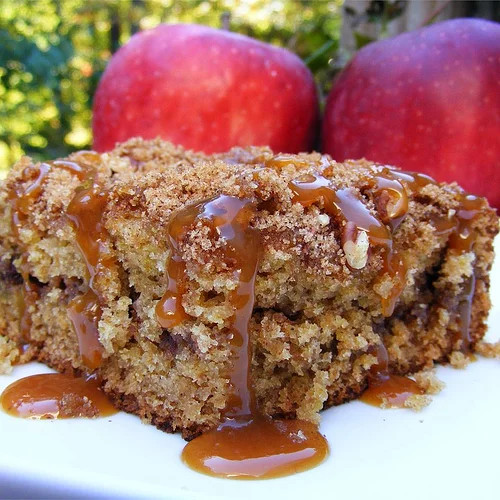

Homepage
Apple Cake Recipe

Apple Butter Spice Cake
A well-known dessert whose chief ingredient is an apple.
The sliced apple prepends aroma to an unardorned cake base.
Alternatively, apple butter works the magic as well.
Ingredients
Topping:
- 1 cup packed brown sugar
- 1 teaspoon ground cinnamon
- half teaspoon ground nutmeg
- half cup chopped pecans
Cake:
- 2 cups all-purpose flour
- 1 teaspoon baking powder
- 1 teaspoon baking soda
- half teaspoon salt
- half cup butter, room temperature
- 1 cup white sugar
- 3-quarter cup apple butter
- 1 teaspoon vanilla extract
- half cup whole bran cereal or wheat germ
- 1 cup sour cream
- 2 eggs, room temperature
Steps:
- Preheat oven to 350 degrees F (175 degrees C). Grease a 9x13-inch pan.
- Prepare the topping by mixing together the brown sugar, cinnamon, nutmeg,
and chopped pecans.
- Sift together the flour, baking powder, baking soda, and salt
- Beat butter and sugar together in a large bowl with an electric mixer until
light and fluffy; add eggs one at a time, thoroughly beating each egg into the
butter mixture before adding the next. Add apple butter, vanilla, and wheat germ
or bran cereal. Add sifted dry ingredients alternately with sour cream; mix well
after each addition.
- Pour half the batter into the prepared pan; sprinkle with half of the topping.
Pour remaining batter into pan and top with the rest of the topping.
- Bake in the preheated oven until a tester inserted in the centre comes out
clean, about 40 minutes.